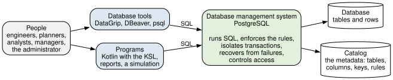
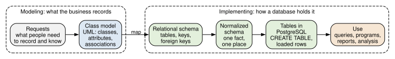

1 Databases in Industrial Engineering
After reading this chapter you should be able to:
- explain why industrial engineers store operational data in a database rather than in files or spreadsheets
- identify the data an industrial system generates: orders, inventory, production, quality, and logistics records
- describe the components of a database system and the role of a database management system
- distinguish modeling a system’s data from implementing it in a database
- recognize the databases used throughout this book
Industrial engineers design and improve systems that make, move, and serve: production lines, warehouses, supply chains, hospitals, transit networks. Every such system runs on records. An order is taken, a part is made, a lot is inspected, a shipment leaves, and each event is written down somewhere, by someone, so that the next person can act on it. The quality of those records limits the quality of every decision made from them, from tomorrow’s schedule to next year’s capacity plan.
This chapter asks why those records belong in a database and what that means for an engineer. It shows what goes wrong when a system’s data lives in spreadsheets, surveys the data that industrial systems generate, describes the parts of a database system and the people who use it, and lays out the path the book follows, from a model of a system’s data to a working database. It ends by introducing the small company whose database the rest of the book builds.
1.1 From files and spreadsheets to databases
This section shows the problems a spreadsheet of operational records runs into, and what a database does about them.
HG Industries, the manufacturer of hand trucks and garden carts that this book follows, took its first orders the way many small companies do: in a spreadsheet kept by the sales office. Each row records one line of an order, with everything the office needed to know about it. Table 1.1 shows the log’s first seven rows: every line of the company’s first three orders of January 2026, and the first line of its fourth.
| Order | Date | Customer | City | State | Product | Description | Qty | Price |
|---|---|---|---|---|---|---|---|---|
| SO-5001 | 2026-01-05 | Riverside Hardware | Fayetteville | AR | HT-100 | Two-wheel hand truck | 10 | 89.00 |
| SO-5001 | 2026-01-05 | Riverside Hardware | Fayetteville | AR | GC-300 | Steel garden cart | 4 | 119.00 |
| SO-5002 | 2026-01-07 | Cedar Creek Home Center | Tulsa | OK | HT-200 | Convertible hand truck | 6 | 139.00 |
| SO-5003 | 2026-01-12 | Summit Farm Supply | Springdale | AR | HT-100 | Two-wheel hand truck | 12 | 85.00 |
| SO-5003 | 2026-01-12 | Summit Farm Supply | Springdale | AR | HT-200 | Convertible hand truck | 4 | 135.00 |
| SO-5003 | 2026-01-12 | Summit Farm Supply | Springdale | AR | GC-300 | Steel garden cart | 6 | 115.00 |
| SO-5004 | 2026-01-15 | Riverside Hardware | Fayetteville | AR | HT-100 | Two-wheel hand truck | 20 | 89.00 |
The log is easy to start and easy to read, and for a few dozen orders it works. Look closer at what it stores, though. Riverside Hardware’s city and state appear on three of the log’s seven rows, and the description of the HT-100 on three. Each row mixes facts about four different things: an order, a customer, a product, and the quantity and price of one product on one order. Thus, most facts in the log are stored many times, and nothing ties the copies together. Four problems follow, each a request the log handles badly.
- Changing a fact. Riverside Hardware moves to Rogers. Every one of its rows must be changed, and a row missed leaves the company in two cities at once, with no way to tell which is right.
- Recording a fact on its own. HG Industries designs a new poly garden cart, the GC-400, and wants to record its description and list price before anyone orders it. The log has no place for a product without an order.
- Removing a fact. Cedar Creek Home Center cancels order SO-5002, and its row is deleted. The log no longer knows that Cedar Creek is a customer, or where it is, because that row was the only place it said so.
- Keeping the rules. Nothing stops a clerk from typing
HT-10OforHT-100, a quantity often, or an order date in 2062. Each mistake is found, if at all, when a report comes out wrong.
The first three are the anomalies of a table that stores several kinds of fact together, and Section 7.2 studies them precisely as update, insertion, and deletion anomalies. The fourth is not an anomaly. The log holds no rules, so nothing can enforce them. Two more problems appear as soon as more than one person needs the log. Two clerks editing their copies of the file on the same afternoon produce two versions, and one clerk’s work is lost when the other’s is saved. And a question that crosses the log and the warehouse’s own spreadsheet of stock (which products are ordered but not in stock?) means copying and matching rows by hand.
A database is an organized collection of related data, stored so that many people and programs can share it, with the rules the data must obey stored alongside it. In HG Industries’ database, each customer is recorded once, in a table of customers; each product once, in a table of products; each order once; and each line of an order once, referring to its order and its product rather than copying them. Moving Riverside Hardware changes one row. The GC-400 is a row in the products table with no orders. Canceling SO-5002 removes the order, not the customer. The database refuses a product number that does not exist, a quantity that is not a number, and, if told to, an order date outside a sensible range. The next chapter describes these tables and how they refer to one another.
None of this makes spreadsheets the wrong tool. A spreadsheet is the right place to explore a set of numbers, chart them, or try a what-if calculation, and engineers use them every day. The distinction is between records that a business keeps and shares, which belong in a database, and an analysis of some of those records, which may well belong in a spreadsheet filled by a query. The next section surveys the records an industrial system keeps.
1.2 Data in industrial systems
This section surveys the data that industrial systems generate and the decisions that use it.
Every function an industrial engineer works on produces records, and each record serves a decision. Table 1.2 lists the common ones, with an example from HG Industries and the kind of decision each supports.
| Function | Records | Example at HG Industries | Decisions that use them |
|---|---|---|---|
| Order management | customers, orders, order lines, prices | Summit Farm Supply orders 12 HT-100 hand trucks | demand forecasts, customer service, pricing |
| Inventory | items, locations, stock levels, reorder points | 18 steel garden carts on hand in Fayetteville | replenishment, safety stock, warehouse layout |
| Production | parts, bills of materials, routings, work centers, work orders | the HT-100 is a frame, two wheel assemblies, two grips, and a kit | scheduling, capacity planning, costing |
| Quality | characteristics, specification limits, inspections, measurements, defects | the weld strength of lot L7004-03 is below its minimum | process control, capability studies, supplier quality |
| Logistics | shipments, carriers, routes, delivery dates | order SO-5001 ships with Boston Mountain Freight three days early | carrier selection, on-time performance |
| People and equipment | operators, certifications, machines, maintenance | three operators are certified to run the welders | staffing, training, maintenance planning |
| Analysis and simulation | historical summaries, model inputs, experiment results | a simulation of the frame line with a third welder | improvement projects, investment decisions |
Two kinds of use run through Table 1.2. The first is operational: recording and looking up the individual events of the business, one order or one inspection at a time, as they happen. The second is analytical: summarizing many events to see a pattern, such as on-time performance by carrier over a year or the capability of a process over a quarter. The same records serve both, but the two uses ask different things of a database, and Chapter 11 explains why a company often keeps its data twice, once for each.
Notice also that the functions of Table 1.2 share their data. The product that sales takes an order for is the part that production makes and quality inspects, and the operator who welds a frame is the one whose certification the plant records. Thus, the records of an industrial system form one connected body of data, and a database that holds them should connect them too, rather than leave each department with its own copy. That connected body of data is what a database system manages.
1.3 Database systems and their users
This section describes the parts of a database system and the people who work with it.
A database management system (DBMS) is the software that stores a database and does everything with it on behalf of the people and programs that use it. This book uses PostgreSQL, a DBMS that is free, widely used in industry, and close to the SQL standard; others include Oracle, Microsoft SQL Server, MySQL, and SQLite. Figure 1.1 shows how the parts fit together.

Read Figure 1.1 from the left. People do not open a database directly. They use database tools, such as DataGrip and DBeaver, the tools this book teaches, or psql, which comes with PostgreSQL; or they use programs written for a purpose, a report, a scheduling application, a simulation that reads its inputs from the database. Tools and programs alike communicate with the DBMS in SQL, the standard language for defining, changing, and querying relational databases, which Chapter 3 begins to teach. The DBMS does the work: it stores the rows, finds the ones a query asks for, and keeps a catalog of metadata, the data about the data, recording what tables exist, their columns and types, and the rules each must obey.
The DBMS also provides services that no spreadsheet does. Integrity, concurrency, and querying answer three problems of Section 1.1: the rules nothing kept, the clerk’s lost work, and the question that crossed two files. Recovery and security answer two problems that section did not raise, a failure in the middle of a change and a user who should not see everything.
- Integrity. The rules stored with the data (a product number must be one that exists, a quantity must be a positive whole number) are enforced on every change, by every program. Chapter 8 shows how they are declared.
- Concurrency. Many people can read and change the database at once, and the DBMS keeps their work from interfering. Chapter 9 shows how.
- Recovery. A change is either made completely or not at all, and a change the DBMS has confirmed survives a power failure.
- Security. Each user can be allowed to see and change only what their work requires.
- Querying. Any question the data can answer can be asked in SQL, without writing a program for it and without copying the data first.
The people around a database system have different roles, and you may hold several of them. End users record and look up data, usually through programs built for them, without seeing SQL. Analysts query the database to answer questions and build reports, which is where most industrial engineers begin. Application programmers write the programs that others use. Database designers decide what the database records and how, the work of Chapter 5 through Chapter 7. A database administrator installs and runs the DBMS, grants access, and keeps backups. An industrial engineer is often the analyst of a system and, on an improvement project, its designer too; the next section describes how design proceeds.
1.4 From a model to a database
This section lays out the path from a business’s needs to a working database, which is the path the book follows.
Building a database begins well before any table is created. It begins with what people need to record and to know, and with a model of the business that says what the database must hold. Figure 1.2 shows the steps.

The steps of Figure 1.2 fall into two parts, and the difference between them is one of the most useful ideas in this book. Modeling describes the business: what things it records, what it records about each, and how they are related, independently of any software. The book’s models are UML class diagrams (Chapter 5), the notation used throughout software and systems engineering. Implementing turns the model into a database a DBMS can hold: tables with keys that link them (Chapter 6), checked so that each fact is stored once (Chapter 7), created and loaded with SQL (Chapter 8), and then used by queries (Chapter 3 and Chapter 4), programs (Chapter 10), and analyses (Chapter 11 and Chapter 12).
The two parts answer different questions, and mixing them causes most bad designs. That is, “Can a customer have more than one address?” is a modeling question, answered by the business; “Should the address be a separate table?” is an implementation question, answered by the model and the rules of Chapter 6. Thus, you should settle what the business records before you decide how to store it. The book, however, starts in the middle, with tables and queries (Chapter 2 through Chapter 4), because a reader who has queried a well-designed database knows what good design produces before learning how to produce it.
1.5 The databases in this book
This section introduces the databases the book’s examples and exercises use.
Almost every example in the book uses one database, built for it: the records of HG Industries, the small manufacturer of Table 1.1. HG makes four products, two hand trucks and two garden carts, in a plant in Fayetteville, Arkansas, and sells them to hardware stores, farm stores, and distributors from warehouses in Fayetteville and Tulsa, Oklahoma. Its database has a part for each department that keeps records: distribution (customers, orders, products, stock, shipments), production (parts, bills of materials, work centers, machines, operators, routings, work orders), and quality (characteristics, inspections, measurements, defects). Later chapters add a year of history, a star schema for analyzing sales, and the output of a simulation of the plant.
The database is small on purpose. Its base data holds eight customers and twelve orders, few enough that you can check any query’s answer by hand, and the book asks you to, before you trust the computer to do it. The year of history that later chapters add brings the database to 30 customers and 614 orders, for the questions that need more data than a reader checks by hand. The database is also introduced in stages, a few tables at a time, as each chapter needs them, so that a new idea arrives against tables you already know. Appendix C describes the whole database and how to load it into your own PostgreSQL server (Appendix A).
Exercises also use a second database of the book’s own, Millbrook Transit, a week of service of a small town’s bus agency (Section C.10), and four public sample databases, among them a music store and a food importer (Section C.11), so that you practice on schemas designed by other people as well. The next chapter begins with HG Industries’ first tables.
1.6 Summary
Operational records belong in a database, not in spreadsheets. A spreadsheet that mixes facts about several things stores each fact many times, so changing, adding, and removing facts goes wrong, nothing enforces the rules, and sharing it loses work. A database stores each fact once, enforces its rules, and lets many people use it at once.
Industrial systems generate connected data. Orders, inventory, production, quality, logistics, and people and equipment each produce records that serve decisions, and the records of one function refer to those of another. The same data serves operational work, one event at a time, and analysis, many events at once.
A database management system does the work. It stores the data and a catalog of metadata, runs SQL for tools and programs, and provides integrity, concurrency, recovery, security, and querying. Its users range from end users through analysts and programmers to designers and administrators.
Modeling comes before implementing. A class model describes what the business records; mapping, normalization, and SQL turn it into tables that a DBMS holds and that queries, programs, and analyses use.
The book’s examples use one small database, introduced in stages. HG Industries’ base data is small enough to check by hand; Millbrook Transit and four public databases give the exercises other settings.
1.7 Exercises
Exercise 1.1 Match each term on the left with the phrase on the right that defines it.
| Term | Definition |
|---|---|
| a. database | 1. the language tools and programs use to define, change, and query a relational database |
| b. database management system | 2. data about the data: the tables, columns, types, and rules |
| c. metadata | 3. an organized collection of related data, shared, with its rules stored alongside it |
| d. SQL | 4. describing what a business records, independently of any software |
| e. modeling | 5. the software that stores a database and does everything with it |
Exercise 1.2 Before its database, HG Industries’ quality department logged inspections in a spreadsheet. Table 1.3 shows its first rows, for three lots of the hand truck frame.
| Lot | Date | Part | Description | Characteristic | Lower limit | Upper limit | Measured | Inspector |
|---|---|---|---|---|---|---|---|---|
| L7004-01 | 2026-01-28 | FR-110 | Hand truck frame | Coating thickness | 2.0 | 4.0 | 3.1 | Robert Hayes |
| L7004-01 | 2026-01-28 | FR-110 | Hand truck frame | Weld strength | 1500 | 1840 | Robert Hayes | |
| L7004-02 | 2026-01-29 | FR-110 | Hand truck frame | Coating thickness | 2.0 | 4.0 | 2.4 | Linda Nguyen |
| L7004-02 | 2026-01-29 | FR-110 | Hand truck frame | Weld strength | 1500 | 1795 | Linda Nguyen | |
| L7004-03 | 2026-01-30 | FR-110 | Hand truck frame | Coating thickness | 2.0 | 4.0 | 3.3 | Robert Hayes |
| L7004-03 | 2026-01-30 | FR-110 | Hand truck frame | Weld strength | 1500 | 1460 | Robert Hayes |
- Name four different things the rows describe facts about.
- Give one example from these rows of each problem of Section 1.1: changing a fact, recording a fact on its own, removing a fact, and keeping the rules.
- Weld strength has no upper limit. What does the empty cell mean, and how might a reader of the log misread it?
- Which lot fails an inspection, and what would it take to find all such lots in a log of ten thousand rows?
Exercise 1.3 Choose an industrial system you know, such as a distribution center, a hospital pharmacy, a machine shop, or a campus dining service.
- List five kinds of records it generates, in the manner of Table 1.2.
- For each, name one decision that uses it, and say whether the use is operational or analytical.
- Name two records of different functions that refer to each other.
Exercise 1.4 For each problem, name the service of the database management system (Section 1.3) that addresses it.
- A power failure strikes while a shipment is being recorded, after its first line is saved and before its second.
- A clerk records an order for product
HT-10O. - Two planners change the same work order’s quantity at the same moment.
- A temporary employee can read every customer’s credit terms.
- A manager wants to know which customers ordered garden carts in March and has no program for it.
Exercise 1.5 On a project to reduce late shipments at HG Industries, name the role (Section 1.3) of each person, and say which roles an industrial engineer on the project might hold.
- The shipping clerk who records each shipment in the order system.
- The engineer who queries a year of shipments by carrier and week.
- The person who adds a table of carrier contracts and decides its columns.
- The person who restores last night’s backup after a disk fails.
- The programmer who adds a late-shipment warning to the order system.
Exercise 1.6 Say whether each statement is a modeling decision or an implementation decision (Section 1.4), and why.
- A work order is for exactly one manufactured part.
- The
work_ordertable has a foreign key columnmanufactured_part_fk. - An operator may be certified on many machines, with a date and a level for each.
- Quantities are stored as
INTEGER. - A shipment may carry the lines of only one order.
Exercise 1.7 For each use, say whether a spreadsheet or a database is the better tool, and why.
- The record of every customer order HG Industries takes.
- A chart of last quarter’s on-time shipments, prepared for one meeting.
- The inspection results that quality engineers, production supervisors, and an auditor all consult.
- An engineer’s what-if calculation of the capacity added by a third welder.
Exercise 1.8 Using Table 1.2 and Section 1.5, say which of HG Industries’ departments’ records each question needs, and which questions need records of more than one department.
- How many HT-100 hand trucks are on hand in Tulsa?
- Which operators inspected lots whose weld strength was below its minimum?
- Which customers ordered products made on the saw?
- How many work orders for the wheel assembly were completed late in March?